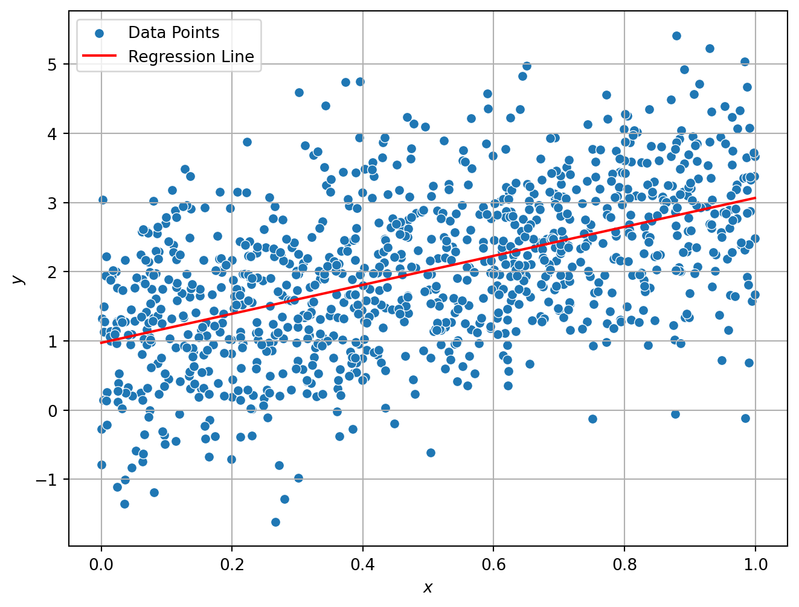
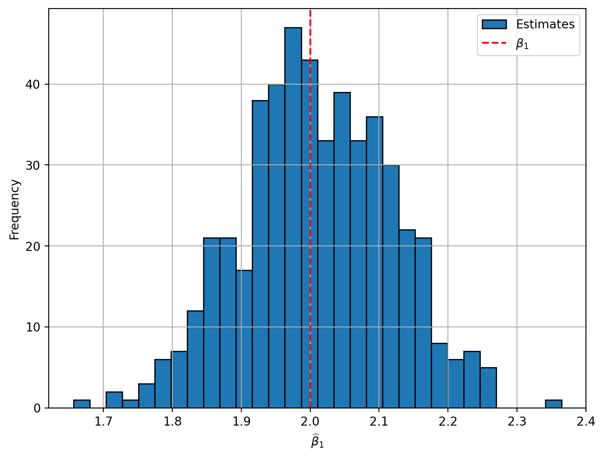
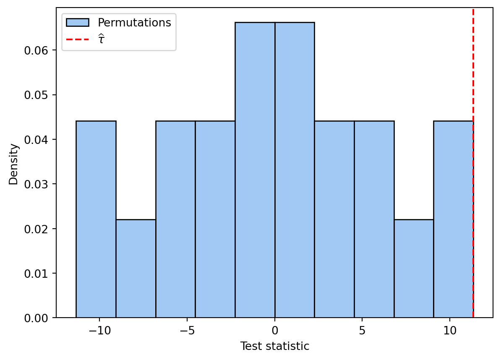

def add_numbers(a, b):
return a + b
result = add_numbers(5, 3)
print(result) # Outputs 88We will begin by examining a number of details which will be required during the exercises encountered in this chapter. This includes regression, simulation with pseudo random numbers, and some basic graphing procedures.
Functions in Python are key to efficient and organized programming. They allow you to encapsulate specific tasks into reusable blocks of code, enhancing modularity and readability. Functions are fundamental in Python, whether for simple operations or complex data analysis tasks.
In Python, functions are defined using the def keyword. A basic function typically includes a name, arguments, and a return statement. Here’s an example of a simple function that adds two numbers:
def add_numbers(a, b):
return a + b
result = add_numbers(5, 3)
print(result) # Outputs 88This function, add_numbers, takes two arguments, a and b, adds them together, and returns the sum.
Function arguments are the values passed to the function when it is called. They can be mandatory or optional. Optional arguments have default values, allowing the function to be called with fewer arguments:
def multiply_numbers(a, b=2):
return a * b
multiply_numbers(10)20In this function, multiply_numbers, b is an optional argument with a default value of 2.
Using functions with arguments is extremely useful in Python, particularly for tasks like data manipulation and analysis.
For a more complex example, we can create a function to perform linear regression analysis using Python’s statsmodels library:
import statsmodels.api as sm
def perform_linear_regression(X, y):
X = sm.add_constant(X) # Adding a constant
model = sm.OLS(y, X).fit()
return model.summary()This function, perform_linear_regression, takes two arguments: X (independent variables) and y (dependent variable), performs the regression analysis, and returns the summary of the model.
To demonstrate the linear regression function, we first create some simulated data:
import numpy as np
import pandas as pd
np.random.seed(123)
data = pd.DataFrame({
'marketing_spend': np.random.uniform(1, 1000, 100),
'sales': np.random.normal(500, 50, 100)
})We then apply the linear regression function to our simulated data:
X = data['marketing_spend']
y = data['sales']
# Perform Linear Regression
regression_results = perform_linear_regression(X, y)
# Print Regression Results
print(regression_results) OLS Regression Results
==============================================================================
Dep. Variable: sales R-squared: 0.005
Model: OLS Adj. R-squared: -0.006
Method: Least Squares F-statistic: 0.4462
Date: Mon, 08 Jan 2024 Prob (F-statistic): 0.506
Time: 13:36:23 Log-Likelihood: -530.91
No. Observations: 100 AIC: 1066.
Df Residuals: 98 BIC: 1071.
Df Model: 1
Covariance Type: nonrobust
===================================================================================
coef std err t P>|t| [0.025 0.975]
-----------------------------------------------------------------------------------
const 508.5108 11.260 45.161 0.000 486.166 530.856
marketing_spend -0.0135 0.020 -0.668 0.506 -0.053 0.027
==============================================================================
Omnibus: 0.322 Durbin-Watson: 1.851
Prob(Omnibus): 0.851 Jarque-Bera (JB): 0.099
Skew: -0.067 Prob(JB): 0.951
Kurtosis: 3.078 Cond. No. 1.27e+03
==============================================================================
Notes:
[1] Standard Errors assume that the covariance matrix of the errors is correctly specified.
[2] The condition number is large, 1.27e+03. This might indicate that there are
strong multicollinearity or other numerical problems.To start, we will simulate some data based on the following data generating process:
\(y_i = \beta_0 + \beta_1 x_i + \varepsilon_i\)
where \(\beta_0=1\), \(\beta_1=2\), and both \(x_i\) and \(\varepsilon_i\) are distributed \(\mathcal{N}(0,1)\). Having conducted this simulation, we will estimate a regression model to estimate \(\widehat\beta_1\). In the book, you will be asked to consider examples which are more appropriate for the treatment effects framework which we are considering.
import numpy as np
import pandas as pd
from sklearn.linear_model import LinearRegression
# Generate independent variable (X) and dependent variable (Y)
np.random.seed(1213)
N = 1000
x = np.random.rand(N, 1) # 1000 observations of a single independent variable
y = 1 + 2*x + np.random.randn(N, 1) # Linear relationship with some noise
data = pd.DataFrame({'x': x[:, 0], 'y': y[:, 0]})
#Could also do:
#data = pd.DataFrame({'x': x.flatten(), 'y': y.flatten()})
# Create a LinearRegression model
model = LinearRegression()
# Fit the model to the data
model.fit(data[['x']], data[['y']])
# Coefficients
beta1hat = model.coef_[0][0]
beta0hat = model.intercept_[0]
print(f"beta 1 (Coefficient): {beta1hat}")
print(f"Intercept: {beta0hat}")beta 1 (Coefficient): 2.0948413011297347
Intercept: 0.9734410595829046import matplotlib.pyplot as plt
import seaborn as sns
# Make predictions using the model
data['yhat'] = model.predict(data[['x']])
# Create a scatter plot with regression line
plt.figure(figsize=(8, 6))
sns.scatterplot(x='x', y='y', data=data, label='Data Points')
sns.lineplot(x='x', y='yhat', data=data, color='red', label='Regression Line')
plt.xlabel(r'$x$')
plt.ylabel(r'$y$')
plt.legend()
plt.grid(True)
plt.show()C:\Users\Usuario\AppData\Local\Programs\Python\Python311\Lib\site-packages\seaborn\_oldcore.py:1498: FutureWarning: is_categorical_dtype is deprecated and will be removed in a future version. Use isinstance(dtype, CategoricalDtype) instead
if pd.api.types.is_categorical_dtype(vector):
C:\Users\Usuario\AppData\Local\Programs\Python\Python311\Lib\site-packages\seaborn\_oldcore.py:1498: FutureWarning: is_categorical_dtype is deprecated and will be removed in a future version. Use isinstance(dtype, CategoricalDtype) instead
if pd.api.types.is_categorical_dtype(vector):
C:\Users\Usuario\AppData\Local\Programs\Python\Python311\Lib\site-packages\seaborn\_oldcore.py:1498: FutureWarning: is_categorical_dtype is deprecated and will be removed in a future version. Use isinstance(dtype, CategoricalDtype) instead
if pd.api.types.is_categorical_dtype(vector):
C:\Users\Usuario\AppData\Local\Programs\Python\Python311\Lib\site-packages\seaborn\_oldcore.py:1498: FutureWarning: is_categorical_dtype is deprecated and will be removed in a future version. Use isinstance(dtype, CategoricalDtype) instead
if pd.api.types.is_categorical_dtype(vector):
C:\Users\Usuario\AppData\Local\Programs\Python\Python311\Lib\site-packages\seaborn\_oldcore.py:1119: FutureWarning: use_inf_as_na option is deprecated and will be removed in a future version. Convert inf values to NaN before operating instead.
with pd.option_context('mode.use_inf_as_na', True):
C:\Users\Usuario\AppData\Local\Programs\Python\Python311\Lib\site-packages\seaborn\_oldcore.py:1119: FutureWarning: use_inf_as_na option is deprecated and will be removed in a future version. Convert inf values to NaN before operating instead.
with pd.option_context('mode.use_inf_as_na', True):
Finally, we will do this 500 times, to see what the distribution of estimated paramters \(\widehat\beta_1\) looks like:
#Now do this 500 times to see distribution of beta hat
# Create an empty list to store slope coefficients
beta1hats = []
# Perform the simulations and regressions 500 times
for _ in range(500):
# Generate synthetic data
x = np.random.rand(N, 1)
y = 1 + 2 *x + np.random.randn(N, 1)
# Create a DataFrame
data = pd.DataFrame({'x': x[:, 0], 'y': y[:, 0]})
# Create a LinearRegression model and fit it to the data
model = LinearRegression()
model.fit(data[['x']], data[['y']])
# Extract the slope coefficient and store it
beta1hats.append(model.coef_[0][0])
# Calculate mean estimate of beta 1 hat
print('Mean coefficient estimate is: ' + str(np.mean(beta1hats)))
# Create a histogram of the slope coefficients
plt.figure(figsize=(8, 6))
plt.hist(beta1hats, bins=30, edgecolor='black', label='Estimates')
plt.axvline(2, color='red', linestyle='dashed', label=r'$\beta_1$')
plt.xlabel(r'$\widehat\beta_1$')
plt.ylabel('Frequency')
plt.legend()
plt.grid(True)
plt.show()Mean coefficient estimate is: 2.009520312036073
To understand the equivalence between regression analysis and the comparison of means in a binary regression set-up, we refer to Section 2.1 of the online coding resource. In this section, we work with data from a randomized control trial that examines asset transfers to poor households in India, as discussed in the paper by Banerjee et al. (2021).
import pandas as pd
import statsmodels.api as sm
# Load the household data
data = pd.read_csv("Datasets/Banerjee_et_al_2021.csv")
# Assign the loaded data to subset_data
subset_data = data
# Remove rows with missing values
subset_data = subset_data.dropna(subset=['ind_fin_el1', 'treatment'])
# Check for missing values
print("Missing values in 'ind_fin_el1':", subset_data['ind_fin_el1'].isna().sum())
print("Missing values in 'treatment':", subset_data['treatment'].isna().sum())
# Re-run the regression
X = subset_data['treatment']
y = subset_data['ind_fin_el1']
X = sm.add_constant(X)
model = sm.OLS(y, X).fit()
print(model.summary()) # Note down the coefficient for the treatment variable
# Store the coefficient for the treatment variable
coef_treatment = model.params['treatment']
# Display the regression coefficient
print(f"Coefficient for treatment in regression: {coef_treatment}")
# Calculate the means and difference in means
mean_treatment = subset_data.loc[(subset_data['treatment'] == 1), 'ind_fin_el1'].mean()
mean_control = subset_data.loc[(subset_data['treatment'] == 0), 'ind_fin_el1'].mean()
diff_means = mean_treatment - mean_control
print(f"Difference in means (Treatment - Control): {diff_means}")
# Display the comparison
print("The coefficient from the regression should be equal to the difference in means to demonstrate equivalence.")Missing values in 'ind_fin_el1': 0
Missing values in 'treatment': 0
OLS Regression Results
==============================================================================
Dep. Variable: ind_fin_el1 R-squared: 0.000
Model: OLS Adj. R-squared: -0.001
Method: Least Squares F-statistic: 0.05307
Date: Mon, 08 Jan 2024 Prob (F-statistic): 0.818
Time: 13:36:27 Log-Likelihood: -729.69
No. Observations: 815 AIC: 1463.
Df Residuals: 813 BIC: 1473.
Df Model: 1
Covariance Type: nonrobust
==============================================================================
coef std err t P>|t| [0.025 0.975]
------------------------------------------------------------------------------
const 0.1354 0.030 4.469 0.000 0.076 0.195
treatment -0.0096 0.042 -0.230 0.818 -0.091 0.072
==============================================================================
Omnibus: 613.330 Durbin-Watson: 1.913
Prob(Omnibus): 0.000 Jarque-Bera (JB): 9492.123
Skew: 3.359 Prob(JB): 0.00
Kurtosis: 18.310 Cond. No. 2.69
==============================================================================
Notes:
[1] Standard Errors assume that the covariance matrix of the errors is correctly specified.
Coefficient for treatment in regression: -0.009589322745445057
Difference in means (Treatment - Control): -0.009589322745445328
The coefficient from the regression should be equal to the difference in means to demonstrate equivalence.*FIX INTRO** Randomization inference, although a theoretical concept, is best illustrated with practical examples. A particularly illustrative approach is visualization through tabular permutation. The following online coding resource provides a detailed introduction to this method. In this context, we will work with data from the study “Long-Term effects of the Targeting the Ultra Poor Program” conducted by Abhijit Banerjee, Esther Duflo, and Garima Sharma. Here we will work with data from Banerjee, Duflo, and Sharma (2021)
It is perhaps useful to see a simple example. Consider the case of 6 units, with 3 observations randomly assigned treatment. Imagine that the observed outcomes were then, in the treatment group: \((34,27,29)\), and in the control group: \((14,18,24)\). A simple comparison of means estimator suggests that the treatment effect is 11.33. To calculate a p-value, we can permute all the possible combinations, and ask what proportion of these are greater than or equal to this treatment effect. If we consider random orderings of 6 units, this suggests that there are \(6!\) possible combinations, but in reality, as we are randomly choosing 3 units from these 6 to assign a permuted treatment status, the actual value of different combinations is \(6\choose 3\) \(=\frac{6!}{3!*(6-3)!}=20\). We document each of these possible permutations, as well as their permuted treatment effect in the Table below. In this case, we can see that only 1 of the 20 different permutations is greater than or equal to 11.33 he original treatment status). Suggesting an exact p-value of \(1/20=0.05\).
| Permutation | T1 | T2 | T3 | C1 | C2 | C3 | Estimate |
|---|---|---|---|---|---|---|---|
| Original (1) | 34 | 27 | 29 | 14 | 18 | 24 | 11.33 |
| 2 | 34 | 27 | 14 | 29 | 18 | 24 | 1.33 |
| 3 | 34 | 27 | 18 | 14 | 29 | 24 | 4 |
| 4 | 34 | 27 | 24 | 14 | 18 | 29 | 8 |
| 5 | 34 | 14 | 29 | 27 | 18 | 24 | 2.67 |
| 6 | 34 | 18 | 29 | 14 | 27 | 24 | 5.33 |
| 7 | 34 | 24 | 29 | 14 | 18 | 27 | 9.33 |
| 8 | 14 | 27 | 29 | 34 | 18 | 24 | -2 |
| 9 | 18 | 27 | 29 | 14 | 34 | 24 | 0.67 |
| 10 | 24 | 27 | 29 | 14 | 18 | 34 | 4.67 |
| 11 | 34 | 14 | 18 | 27 | 29 | 24 | -4.67 |
| 12 | 34 | 14 | 24 | 27 | 18 | 29 | -0.67 |
| 13 | 34 | 18 | 24 | 14 | 27 | 29 | 2 |
| 14 | 14 | 27 | 18 | 34 | 29 | 24 | -9.33 |
| 15 | 14 | 27 | 24 | 34 | 18 | 29 | -5.33 |
| 16 | 18 | 27 | 24 | 14 | 34 | 29 | -2.67 |
| 17 | 14 | 18 | 29 | 34 | 27 | 24 | -8 |
| 18 | 14 | 24 | 29 | 34 | 18 | 27 | -4 |
| 19 | 18 | 24 | 29 | 14 | 34 | 27 | -1.33 |
| 20 | 14 | 18 | 24 | 34 | 27 | 29 | -11.33 |
We will set this up in Python. First, we will load the required libraries:
#Load required libraries
import pandas as pd
import numpy as np
from itertools import permutations
import matplotlib.pyplot as plt
import seaborn as snsWe will now enter data as a Pandas data frame, and subsequently calculate the difference in means estimator in a number of lines. You will note that in calculating the differnce in means estimator, we are first sub-setting using logical indexing (for example: data[data['W']==1], which means “choose all rows of data for which \(W=1\)”). Then, we calculate the means in each group using the Pandas mean() operator.
#Enter data as Pandas data frame
data = {'Y': [34, 27, 29, 14, 18, 24],
'W': [1, 1, 1, 0, 0, 0]}
data = pd.DataFrame(data)
#Calculate Difference in means estimator
Y1 = data[data['W']==1]['Y']
Y0 = data[data['W']==0]['Y']
tau = Y1.mean() - Y0.mean()#Generate permutations of W
perm=permutations([1,1,1,0,0,0])
#Wperm=perm
Wperm = set(perm)
Taus = []
for p in Wperm:
dataP = pd.DataFrame({'Y': [34, 27, 29, 14, 18, 24], 'W': p})
tauP = dataP[dataP['W']==1]['Y'].mean()-dataP[dataP['W']==0]['Y'].mean()
Taus.append(tauP)
p_2side = sum(np.absolute(Taus)>=tau)/len(Taus)
p_1side = sum(Taus>=tau)/len(Taus)
print("The two-sided p-value is: " + str(p_2side))The two-sided p-value is: 0.1#Generate graph
sns.set_palette("pastel")
plt.hist(Taus,bins=10, edgecolor='black', density=True, label="Permutations")
plt.ylabel("Density")
plt.xlabel("Test statistic")
plt.axvline(tau, color='red', linestyle='dashed', label=r'$\widehat\tau$')
plt.legend()
plt.show()
Banerjee, Duflo, and Sharma (2021)
import pandas as pd
import numpy as np
# Read the data
data = pd.read_csv("Datasets/Banerjee_et_al_2021.csv")
# Function to perform randomization inference
def randomization_inference(data, column_name):
# Observed treatment effect
treated = data[data['treatment'] == 1]
control = data[data['treatment'] == 0]
obs_effect = treated[column_name].mean() - control[column_name].mean()
# Randomization inference
n_permutations = 10000
permuted_effects = np.zeros(n_permutations)
for i in range(n_permutations):
permuted_treatment = np.random.permutation(data['treatment'].values)
treated_effect = data[column_name][permuted_treatment == 1].mean()
control_effect = data[column_name][permuted_treatment == 0].mean()
permuted_effects[i] = treated_effect - control_effect
# Calculate p-value
p_value = np.mean(np.abs(permuted_effects) >= np.abs(obs_effect))
return {"observed_effect": obs_effect, "p_value": p_value}
def print_results(index_name, results):
significance = "significative" if results['p_value'] < 0.05 else "not significative"
print(f"The observed effect of {index_name} is {results['observed_effect']:.4f} and it's p-value is {results['p_value']:.4f}, which is {significance}.")
# Financial Index
financial_results = randomization_inference(data, 'ind_fin_el1')
print_results("Financial Index", financial_results)
# Asset Index
asset_results = randomization_inference(data, 'asset_ind_tot_el1')
print_results("Asset Index", asset_results)The observed effect of Financial Index is -0.0096 and it's p-value is 0.8198, which is not significative.The observed effect of Asset Index is 0.4078 and it's p-value is 0.0002, which is significative.